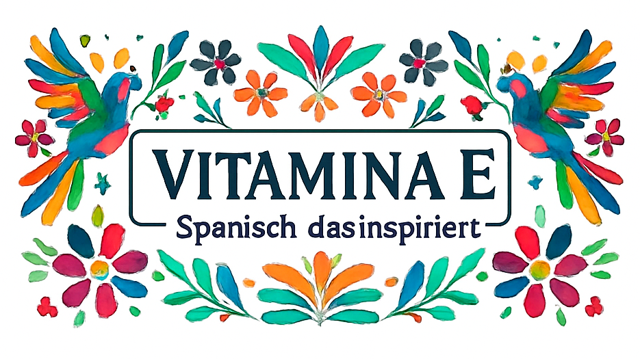

Willkommen bei Vitamina E Bei uns lernen Sie Spanisch lebendig, interaktiv und praxisnah. Von Anfang an stehen Kommunikation, aktives Mitmachen und der reale Sprachgebrauch im Mittelpunkt.
In kleinen Gruppen von 3 bis 6 Teilnehmenden haben Sie viel Raum zum Sprechen, Üben und Austauschen.
Unsere Kurse sind dynamisch, strukturiert und flexibel – angepasst an Ihre persönlichen Ziele. In einer offenen und motivierenden Atmosphäre gewinnen Sie schnell Sicherheit im Spanischen und machen spürbare Fortschritte.
Neben der Sprache vermitteln wir auch die Vielfalt und Kultur der spanischsprachigen Welt. Ob Anfänger oder Fortgeschrittene: Gemeinsam finden wir den Kurs, der zu Ihnen passt.
Mit Standorten in Manegg, Stauffacher sowie Online-Unterricht integrieren sich unsere Kurse perfekt in Ihren Alltag.
Vitamina E – Spanisch lernen, erleben und anwenden.
¡Hola! Ich bin Gloria, komme aus Monterrey, Mexiko, und lebe seit über 15 Jahren in der Schweiz. Sprachen begleiten mich schon mein ganzes Leben – sie sind für mich Brücken zwischen Menschen, Kulturen und Geschichten. Schon früh wurde mir klar, wie viel Kraft in Sprache steckt. Deshalb habe ich Angewandte Linguistik (Englisch–Spanisch) studiert und einen Master in Deutsch als Fremdsprache an der Universität Freiburg abgeschlossen. Seit über 13 Jahren begleite ich Menschen in Zürich auf ihrem Weg zum Spanischen – für Reisen, den Beruf oder einfach aus Freude am Lernen. Vitamina E… de Español ist aus meiner persönlichen Leidenschaft für Begegnungen, Austausch und lebendige Kommunikation entstanden. Ich freue mich darauf, dich kennenzulernen – und gemeinsam deine ganz eigene Geschichte auf Spanisch weiterzuschreiben.
✦ Alle Niveaustufen (A1, A2, B1, B2, C1, C2) verfügbar ✦
Perfekt für Einsteiger! Lernen Sie die Grundlagen der spanischen Sprache – von der Aussprache über einfache Konversation bis hin zu alltäglichen Situationen. Dieser Kurs legt ein solides Fundament für Ihre Spanischreise und bringt Ihnen die Sprache mit viel Freude und Farbe näher.
Vertiefen Sie Ihre Sprachkenntnisse durch lebendige Gespräche und authentische Kommunikation. Erweitern Sie Ihren Wortschatz, verbessern Sie Ihre Grammatik und gewinnen Sie Selbstvertrauen beim Sprechen in realen Situationen. Tauchen Sie ein in die Vielfalt der spanischsprachigen Welt.
Für fortgeschrittene Lernende, die ihre Sprachkenntnisse perfektionieren möchten. Fokus auf komplexe Grammatik, anspruchsvolle Texte und kulturelle Themen. Erreichen Sie fließende Kommunikation auf hohem Niveau und bereiten Sie sich auf professionelle oder akademische Herausforderungen vor.
| Stuff | Price |
|---|---|
| aaa | CHF 90 |
| bbb | CHF 100 |
blah, blah